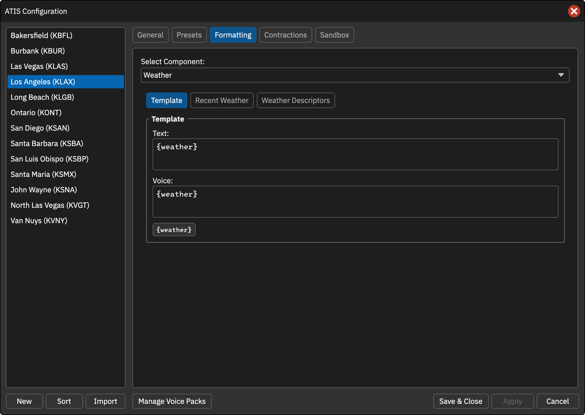
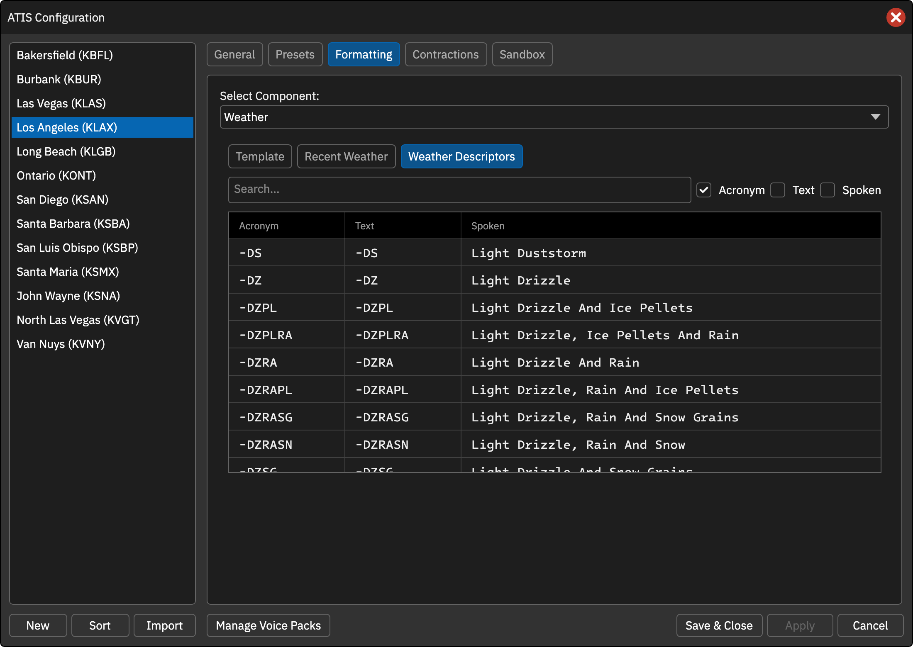

天气现象
预设使用 [PRESENT_WX] / [PRESENT_WEATHER] 插入当前天气。[WX] 表示完整天气串，包含风、能见度等其他项目，不能与当前天气混淆。
元素内部 {weather} 表示天气现象，例如 SHRA BR。
近期天气
Recent Weather 为 METAR 中 RESHRA 等近期天气组设置文字和语音模板。预设变量为 [RECENT_WX]，也包括在 [WX] 中。
默认文字和语音模板为 RECENT WEATHER {weather}。此处 {weather} 是近期天气内容。
天气描述表
分别配置天气代码的 Text 与 Spoken。例如 SHRA 为阵雨，BR 为轻雾。强度和邻近变体如 -RA、+RA、VCSH 可使用不同的文字与朗读形式。
修改的是输出措辞，不改变原始 METAR 或天气实际含义。
操作截图参考
以下为上游原版截图，保留英文标签。用于定位操作；品牌、登录字段与网络行为以本页 CAN 说明为准。

